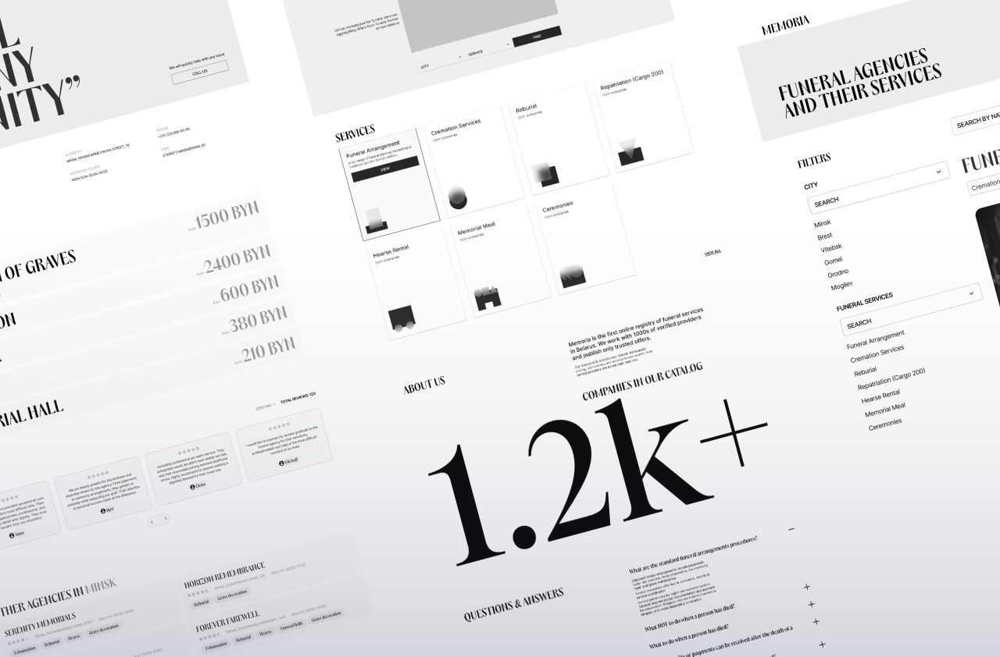
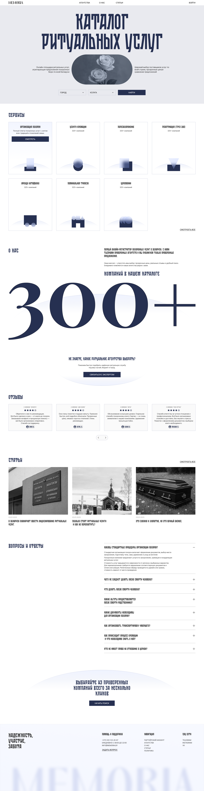
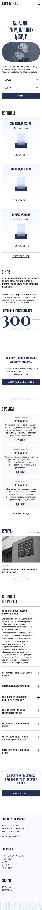
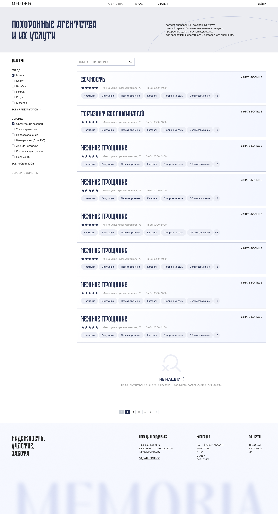
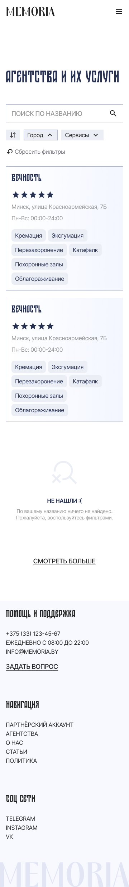
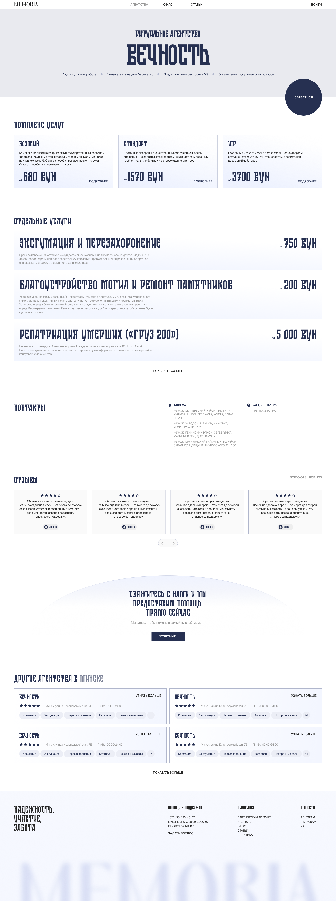

О проекте
Задачей было разработать сервис-каталог (агрегатор) ритуальных услуг с удобным поиском агентств и прозрачной информацией для пользователей.
Особенности ниши
Эмоциональная чувствительность, тут важно убрать лишнее и не добавлять уж слишком сложные взаимодействия с интерфейсом, поэтому я сделал упор на след. моментах:
- Регулируемое законодательство
- Низкий уровень цифровизации
- Недоверие к рынку со стороны клиентов
- Отсутствие прозрачности цен
Моя роль
На старте у нас был бриф, но по ходу работы направление несколько раз корректировалось, поэтому мы регулярно возвращались к логике продукта и пересобирали структуру. Проект требовал не просто «нарисовать сайт», а глубоко разобраться в сфере — с её ограничениями, законодательством и спецификой аудитории.
Потом я погрузился в исследование: изучил конкурентов, проанализировал рынок, провёл интервью как с людьми, которые пользовались ритуальными услугами, так и с представителями агентств. Все интервью проходили через звонки.


Проектирование
После этапа исследования выстроил структуру сервиса, продумал флоу и начал собирать функциональный прототип. Дальше — поиск референсов, разработка ключевых экранов, формирование UI-кита, согласование, правки и плотная работа с фронтендом для корректной реализации.


Это был продукт в чувствительной сфере, где важно не перегрузить, не напугать и не усложнить. Поэтому основной фокус был на простоте, прозрачности и доверии.
Главная страница




Страница поиска агентств




Страница агентства
